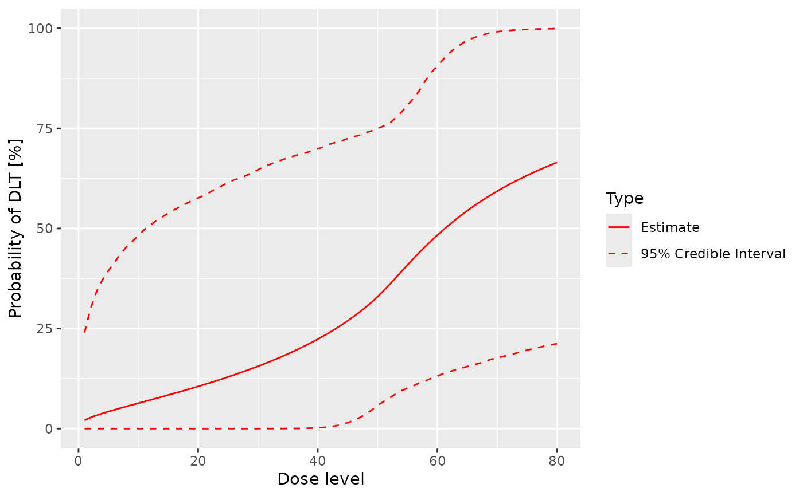
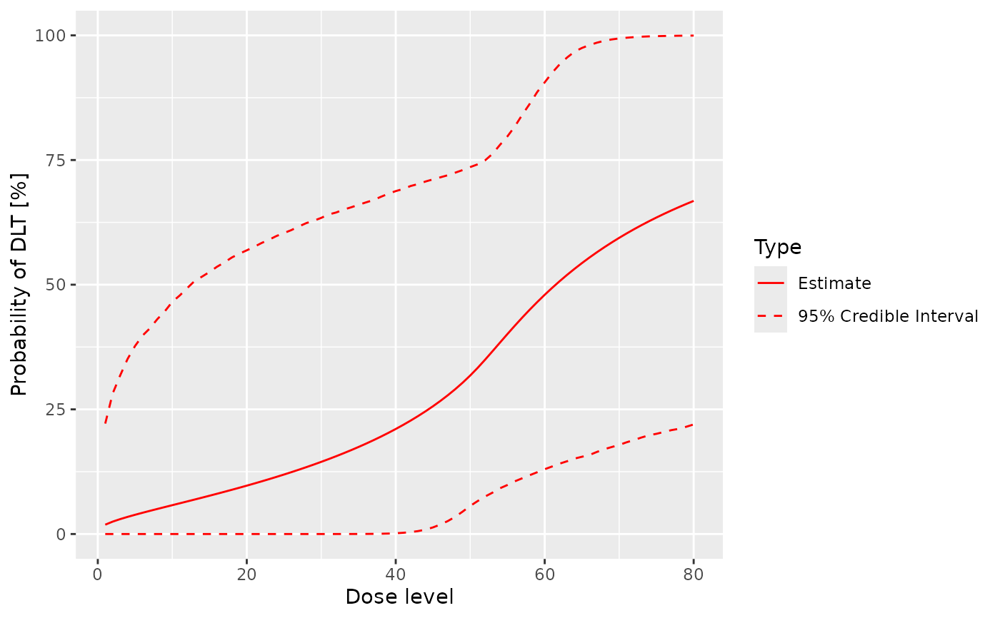

![[Stable]](figures/lifecycle-stable.svg)
LogisticLogNormalMixture is the class for standard logistic model with
online mixture of two bivariate log normal priors.
Usage
LogisticLogNormalMixture(mean, cov, ref_dose, share_weight)
.DefaultLogisticLogNormalMixture()Details
This model can be used when data is arising online from the informative
component of the prior, at the same time with the data of the trial of
main interest. Formally, this is achieved by assuming that the probability
of a DLT at dose \(x\) is given by
$$p(x) = \pi * p1(x) + (1 - \pi) * p2(x)$$
where \(\pi\) is the probability for the model \(p(x)\) being the same
as the model \(p1(x)\), which is the informative component of the prior.
From this model data arises in parallel: at doses xshare, DLT information
yshare is observed, in total nObsshare data points (see DataMixture).
On the other hand, \(1 - \pi\), is the probability of a separate model
\(p2(x)\). Both components have the same log normal prior distribution,
which can be specified by the user, and which is inherited from the
LogisticLogNormal class.
Examples
# Decide on the dose grid and MCMC options.
dose_grid <- 1:80
my_options <- McmcOptions()
# Classic model.
my_model <- LogisticLogNormal(
mean = c(-0.85, 1),
cov = matrix(c(1, -0.5, -0.5, 1), nrow = 2),
ref_dose = 50
)
empty_data <- Data(doseGrid = dose_grid)
prior_samples <- mcmc(empty_data, my_model, my_options)
plot(prior_samples, my_model, empty_data)

# Set up the mixture model and data share object.
model_share <- LogisticLogNormalMixture(
share_weight = 0.1,
mean = c(-0.85, 1),
cov = matrix(c(1, -0.5, -0.5, 1), nrow = 2),
ref_dose = 50
)
empty_data_share <- DataMixture(
doseGrid = dose_grid,
xshare = rep(c(10, 20, 40), each = 4),
yshare = rep(0L, 12),
)
# Compare with the resulting prior model.
prior_samples_share <- mcmc(empty_data_share, model_share, my_options)
plot(prior_samples_share, model_share, empty_data_share)
